How a style is chosen
Fit first: the article's kind, read from its title, limits the choice to the styles that suit it. The rotation (1, 6, 3, 9, 4, 7, 10, 5, 2, 8) then runs only among those, skipping the previous piece's style and preferring one not used lately. A supplied photo selects style 11. A writer may override with a reason.
- A how-to or procedurestyles 1, 3, 4, 2
- A judgment or opinion piecestyles 1, 7, 5, 2
- A concept explainerstyles 1, 6, 3, 9, 7, 10, 2, 8
- A comparisonstyles 1, 6, 2, 8
- A list or sequence of thingsstyles 1, 4, 10, 2
- A data or metrics piecestyles 6, 9, 7, 10, 8
- A tool or template pagestyles 1, 3, 2
- A story or casestyles 1, 5, 2
- A series piecestyles 1, 4, 5, 2
Suggested backgrounds
Suggestions only: any background whose ink passes 4.5:1 is allowed. Accents are computed from the background's hue (mono, duo, trio or analogous) and must pass 3:1, or 4.5:1 when they colour type.
- red-orange #FF5A36
- acid-yellow #E9FF3B
- tangerine #FF8A1F
- teal #14B8A6
- hot-pink #FF5CA8
- mint #3DDC84
- violet #6B4CFF
- electric-blue #2F5BFF
- night #16151A
- night-plum #1C1426
- midnight #121A3A
- paper #F4F1E8
Flat vector, square grid
Bold bright ground, fine ink square grid and grain; the subject in pale card and the accent with ink outlines and a solid ink shadow offset down-right.
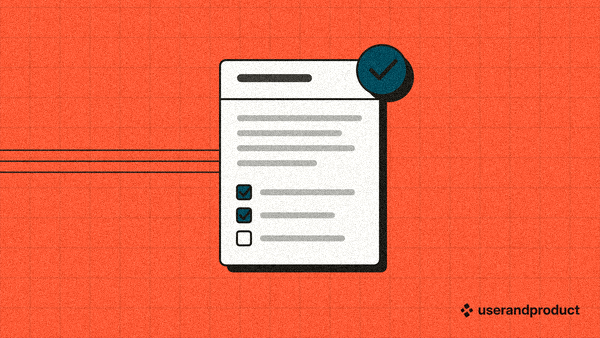
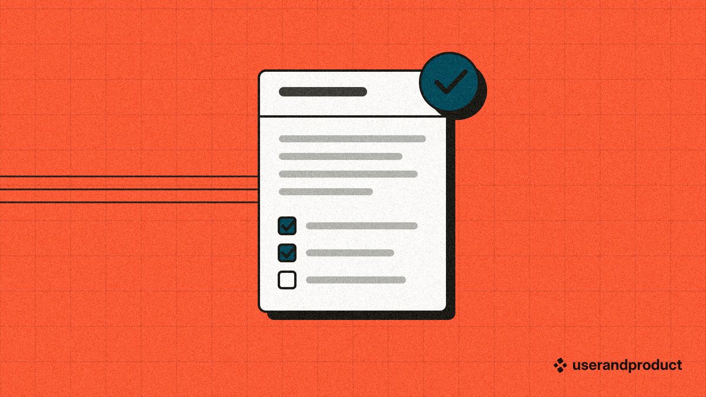
Checks: passes. At 300 px the subject covers 20% of the image and its strongest pixels reach 3.38:1 against the ground; type and lockup contrast 5.91:1. Files: hero 1200, thumb 600, SVG, 300 px check.


Flat vector, dot grid
As style 1 on the dot grid: bold ground, ink dot grid and grain, paper-cut subject with a hard ink shadow.
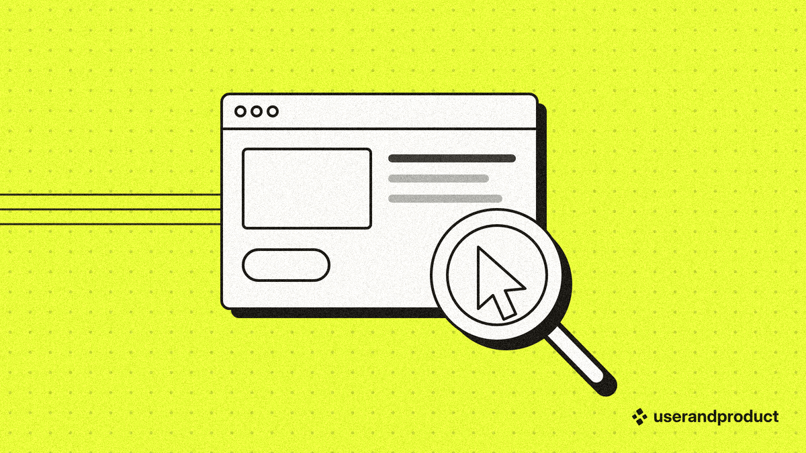
Checks: passes. At 300 px the subject covers 23% of the image and its strongest pixels reach 9.0:1 against the ground; type and lockup contrast 15.0:1. Files: hero 1200, thumb 600, SVG, 300 px check.


Pixel icon and panel
Bold bright ground with the dot grid; a Pixelarticons glyph on whole cells inside a pixel window, interior checker-dithered in the accent, one-cell ink shadow.
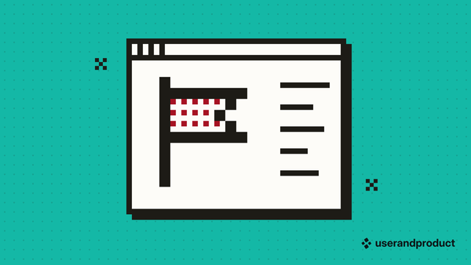
Checks: passes. At 300 px the subject covers 33% of the image and its strongest pixels reach 6.96:1 against the ground; type and lockup contrast 7.22:1. Files: hero 1200, thumb 600, SVG, 300 px check.


Icon sequence
Bold bright ground, grain and a grid; three to five Phosphor icons on pale discs with hard shadows, numbered, on a track; one disc in the accent.
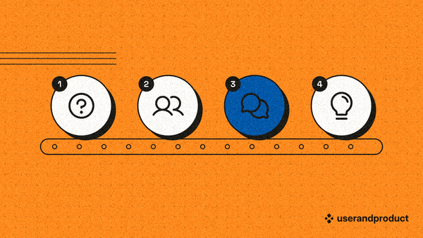
Checks: passes. At 300 px the subject covers 16% of the image and its strongest pixels reach 7.22:1 against the ground; type and lockup contrast 7.6:1, 16.76:1. Files: hero 1200, thumb 600, SVG, 300 px check.


Typographic cover
Near-black or deep saturated ground; a short title in pixel type cut from Space Grotesk (or set type when long) in the accent, and one pixel object.
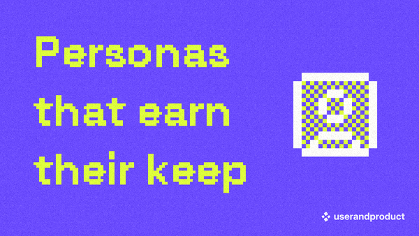
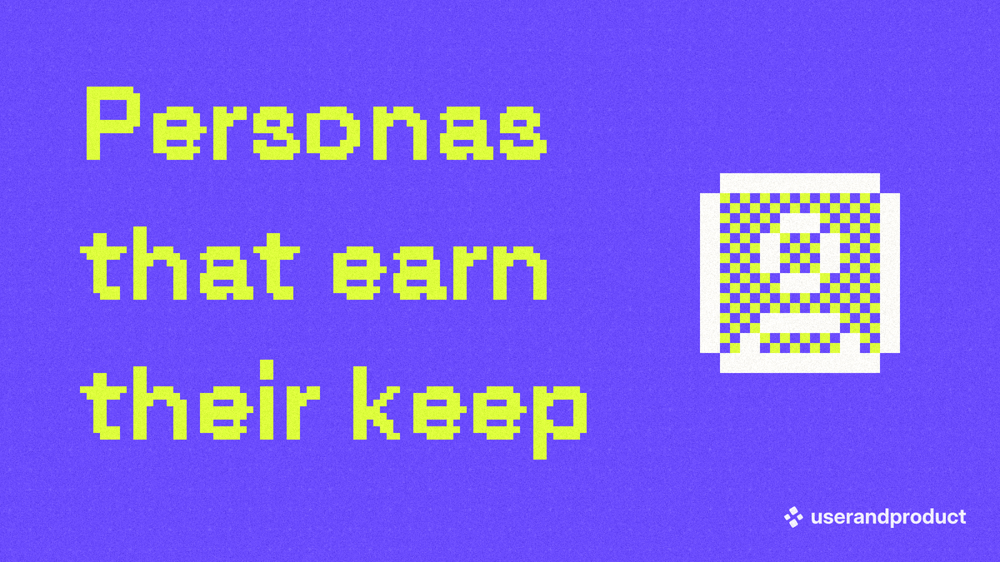
Checks: passes. At 300 px the subject covers 14% of the image and its strongest pixels reach 4.93:1 against the ground; type and lockup contrast 4.5:1, 4.59:1. Files: hero 1200, thumb 600, SVG, 300 px check.


Dark line diagram
Near-black ground with a faint white dot grid; the subject in thin white lines, one part in the accent.
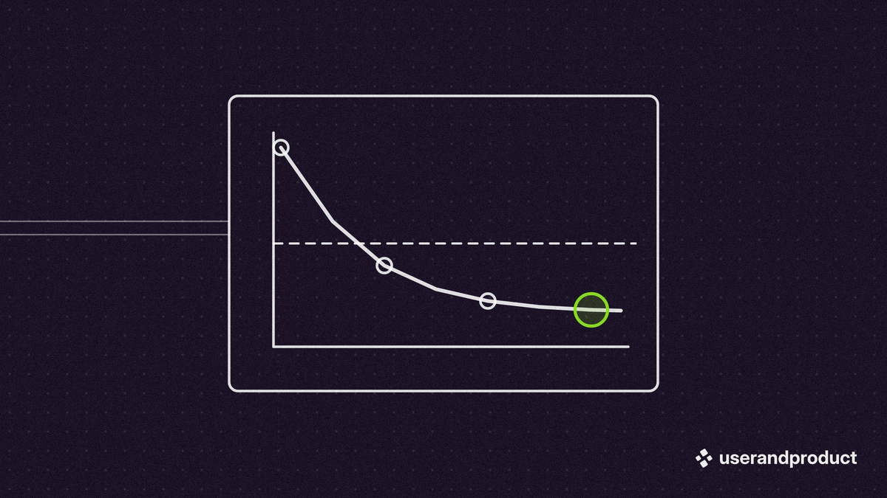
Checks: passes. At 300 px the subject covers 3% of the image and its strongest pixels reach 8.9:1 against the ground; type and lockup contrast 15.15:1. Files: hero 1200, thumb 600, SVG, 300 px check.


Dark glow diagram
Near-black ground; a soft radial glow in the accent behind the subject (trio: two, one per accent), white lines with a halo, the accented part glowing in its colour.
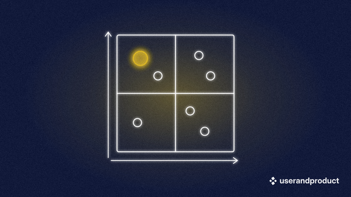
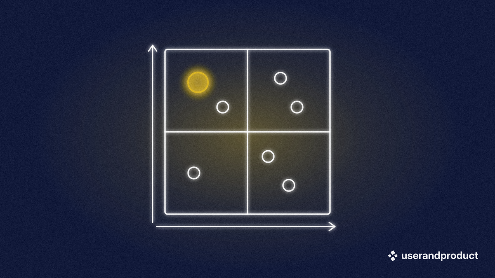
Checks: passes. At 300 px the subject covers 15% of the image and its strongest pixels reach 7.67:1 against the ground; type and lockup contrast 14.52:1. Files: hero 1200, thumb 600, SVG, 300 px check.


Light grid diagram
Pale paper ground with a fine square grid and specks; thin ink lines and one strong warm accent.
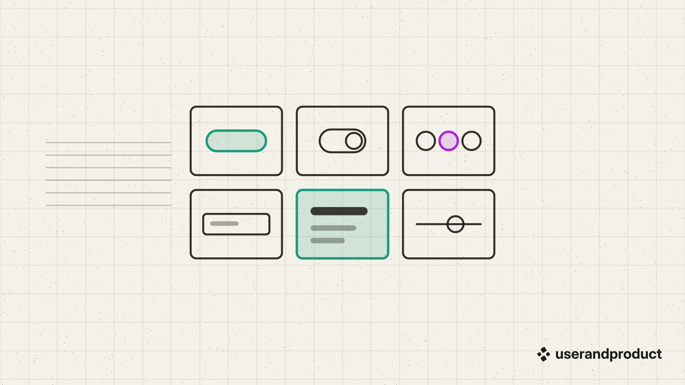
Checks: passes. At 300 px the subject covers 5% of the image and its strongest pixels reach 6.01:1 against the ground; type and lockup contrast 14.88:1. Files: hero 1200, thumb 600, SVG, 300 px check.


Particle field
Near-black ground; a stream of dots in the accent flows in from the left, fading to white, and gathers into the subject's silhouette in white (trio: in a second accent).
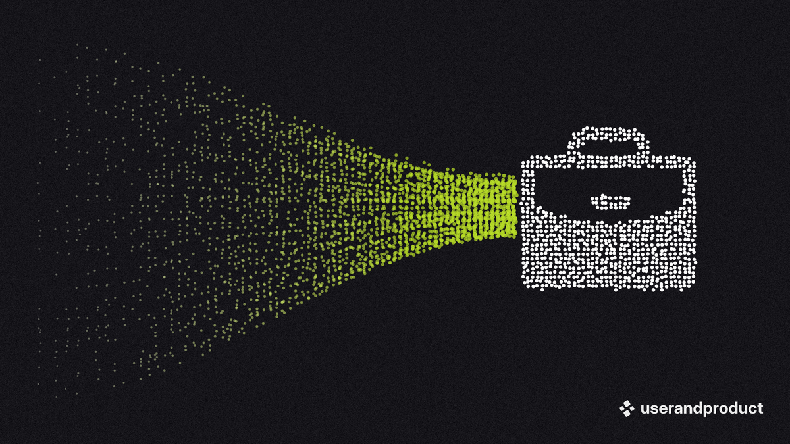
Checks: passes. At 300 px the subject covers 11% of the image and its strongest pixels reach 9.47:1 against the ground; type and lockup contrast 15.38:1. Files: hero 1200, thumb 600, SVG, 300 px check.


Bright particle field
Saturated ground (acid yellow, red-orange, electric blue); the same stream in the accent fading to the ink, the silhouette in the ink (trio: in a second accent).
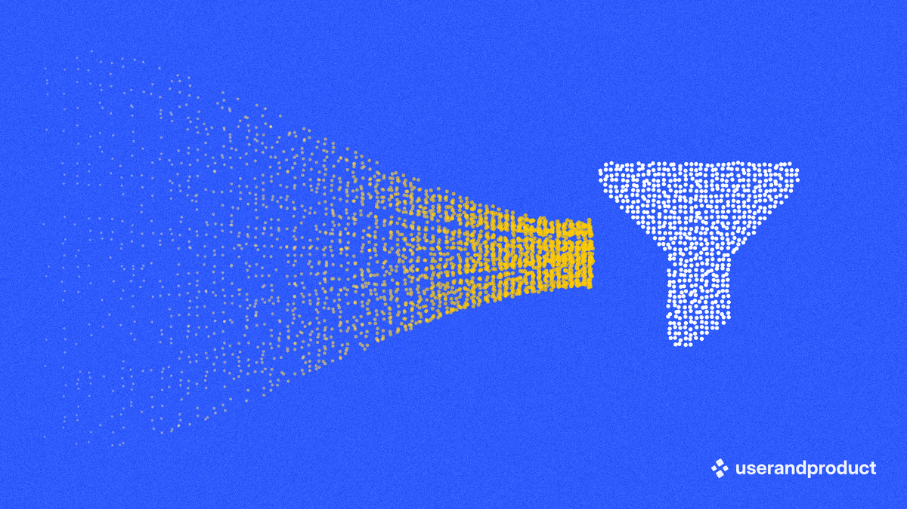
Checks: passes. At 300 px the subject covers 10% of the image and its strongest pixels reach 3.16:1 against the ground; type and lockup contrast 4.62:1. Files: hero 1200, thumb 600, SVG, 300 px check.


Halftone photo
The owner's photo as a 45-degree ink dot screen (or an ordered dither) on a bold bright ground, feathered into it, faint dot grid.
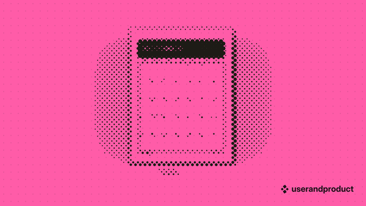
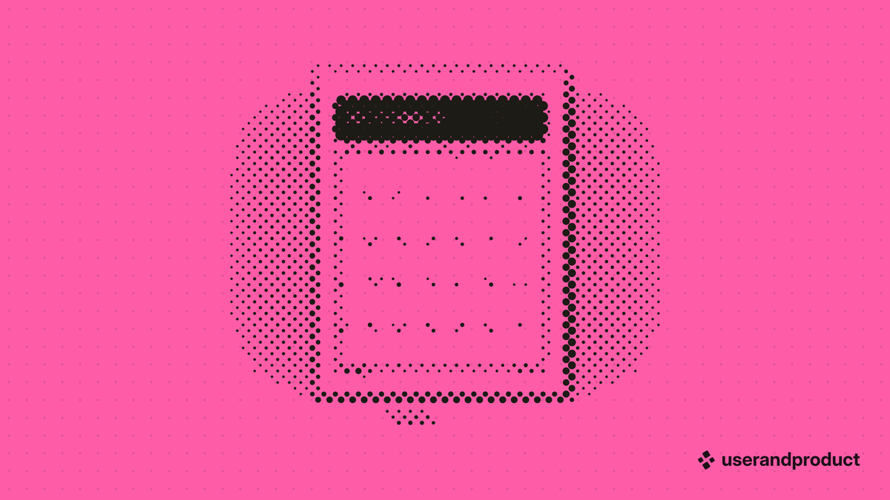
Checks: passes. At 300 px the subject covers 8% of the image and its strongest pixels reach 6.03:1 against the ground; type and lockup contrast 6.38:1. Files: hero 1200, thumb 600, SVG, 300 px check.


The photo here is a screenshot of the owner's own Printables site (a calendar sheet on a tile), used because there is no free-to-use photograph on this machine. A real thumbnail in this style uses the owner's photo of the article's subject: a whiteboard, sticky notes, a workshop table. The same code turns it into ink dots.
Rebuild
python research/mockups/references/blog-thumbnails/build_gallery.py redraws every sample and this
page. Per article: python research/mockups/tools/thumbnail.py --slug <slug> --title "<title>"
--subject <key>.